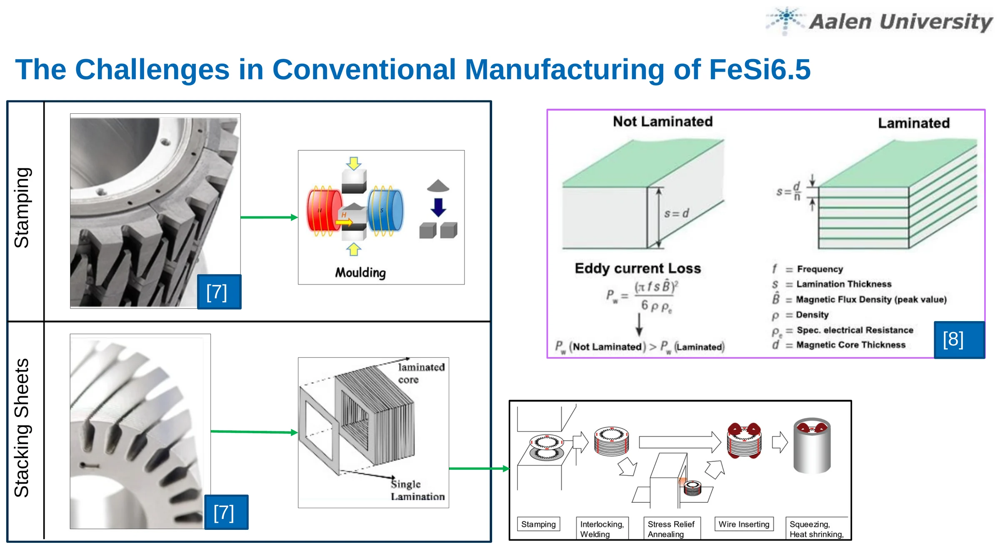
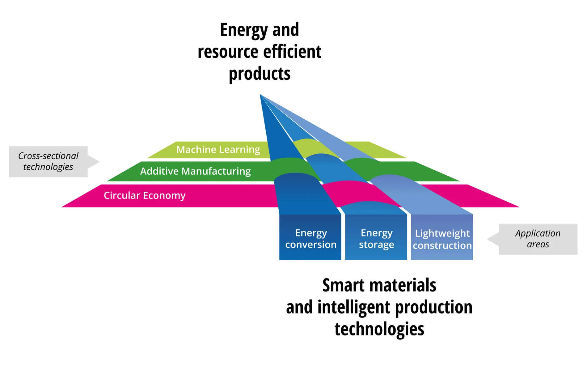
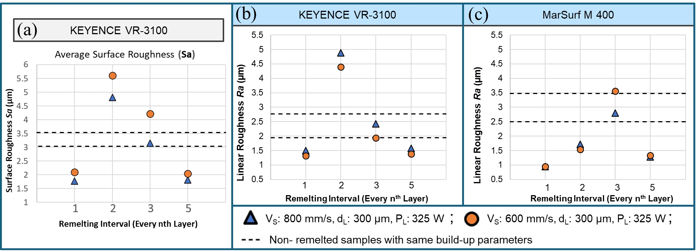
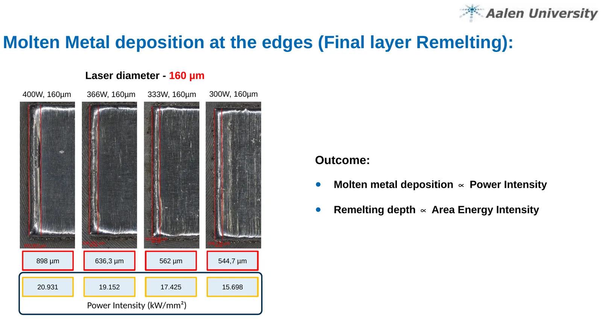
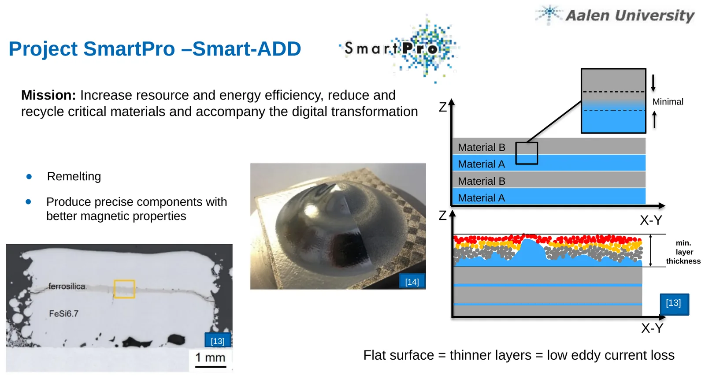

Master's Thesis — research deep-dive
Optimization of Layer Surface Topography in FeSi6.5 Soft Magnetic Components Through In-Process Laser Remelting in the PBF-LB/M Additive Manufacturing Process
M.Sc. Advanced Materials and Manufacturing — Faculty of Mechanical Engineering and Materials Technology, Hochschule Aalen
Conducted at the LaserApplication Center (LAZ) within the SmartPro – Smart-ADD research programme
First supervisor: Prof. Dr. Harald Riegel · Second supervisor: Prof. Dr. Dagmar Goll
Submitted September 2025 · Defended October 2025
Laser Powder Bed Fusion of Metals (PBF-LB/M) builds a part by melting fine metal powder layer by layer with a laser. This work used that freedom to make a soft magnetic alloy manufacturable that no conventional process can touch.
Why this problem
| The EU ends new combustion-engine sales in 2035 | Every replacement drivetrain needs a soft magnetic core |
| 40–100 kg of soft magnetic material per EV motor | Magnets exceed 60% of the total mass of motors, generators and transformers |
| 40–50% of total energy losses in these machines are eddy-current losses | The single largest addressable loss mechanism |
| FeSi6.5 cuts core losses by up to 30% vs. conventional silicon steel | And it cannot be rolled, stamped or stacked — which is why nobody uses it |
The best available soft magnetic alloy is locked out of production by its own brittleness. Printing is the only route that never asks the material to survive deformation.


Objective
Establish a reproducible PBF-LB/M process for FeSi6.5 that yields precisely controlled layer surface topography — smooth enough to carry the ultra-thin insulating layers that multi-material lamination requires — at full density, without cracking, and without sacrificing dimensional accuracy.
The engineering question underneath it. Every laminated core in production today exists because a rolling mill could make the sheet. The alloy was never chosen on magnetic merit; it was chosen because it survived forming. Remove that constraint and the logic inverts. If each layer can be built and finished in place, the designer stops picking the alloy the mill can handle and starts picking the one the magnetic circuit actually wants.
Methodology
The work was structured as three sequential tasks, each gating the next.
1 — Identify the parameters governing track stability
Establish how laser power, scan speed, hatch strategy and overlap determine melt-pool regularity and defect formation, and fix a build window producing uniform, dense layers.
Outcome: 300 W / 800 mm/s, 117 J/mm³, Sa 7.25 µm, 0.152% porosity.
2 — Develop and assess remelting strategies
Test single-pass and cyclic remelting, quantifying roughness reduction, melt-pool modification and — critically — the absence of new defects: porosity, cracks, material removal.
Outcome: final-layer remelting +38%, cyclic remelting +60%.
3 — Position the result for laminated architectures
Although the thesis builds single-material FeSi6.5, frame the findings against multi-material lamination, where alternating magnetic and insulating layers interrupt eddy-current paths. Thinner layers mean lower losses; surfaces smooth enough for ultra-thin layering are the prerequisite.
Innovation & key findings
Finding 1 — Roughness
Cyclic in-process remelting held in a stable conduction melt regime reduced areal roughness from Sa 4.55 µm to ~1.8 µm (~60%) and linear roughness from Ra > 2.5 µm to below 1.0 µm, at full density and with no cracking or delamination in any sample.
Finding 2 — Microstructure, and this is the novel part
Remelting is conventionally a densification treatment. Applied cyclically, it becomes a microstructure engineering tool: repeated energy input disrupts directional solidification, driving a columnar-to-equiaxed transition continuously through the part height.
Remelting frequency is the control variable — every layer produces full transition, every 3rd layer at 600 mm/s produces partial transition, every 5th layer produces essentially none. Grain morphology becomes a process setting rather than an outcome.

Finding 3 — It does not embrittle the alloy
The decisive negative result. Repeated thermal cycling of a brittle alloy should crack it. It did not. Every specimen stayed dense and crack-free, and dimensional accuracy held. Without that, the method would be a curiosity.

Finding 4 — Decoupling two effects that look like one
Molten-metal deposition at part edges scales with power intensity, while remelting depth scales with areal energy intensity. Recognising these as separate levers is what made a stable window achievable — a single volumetric-energy-density figure conflates them and cannot resolve the trade-off.
This is the difference between tuning a process and understanding it.
Practical application for industry
| E-mobility & traction drives | Laminated rotor and stator geometries with lower eddy-current losses — including internal cooling channels and topology-optimised flux paths that sheet stacking cannot produce |
| Transformers & inductors | High-silicon-iron cores in geometries unavailable to conventional lamination |
| Electrical machine development | Rapid iteration of magnetic-circuit geometry with no lamination tooling — a genuine functional prototype route |
| Metal AM process engineering | Conduction-regime cyclic remelting transfers to any alloy where layer topography, surface finish, internal interface quality or grain morphology is the governing requirement |
| Brittle-alloy processing generally | A scalable AM route for materials that cannot survive conventional forming |

The process knowledge developed here has already supported fabrication of larger components exceeding 50 layers in ongoing university projects, validating the scalability of the optimised parameters.
Future work
Integrate multi-material lamination with insulating phases · implement real-time melt-pool monitoring with adaptive laser control · conduct direct magnetic property testing (permeability, coercivity, core loss) · extend the approach to Fe-Co and Fe-Ni soft magnetic alloys · investigate post-build heat treatment for stress relief and enhanced magnetic softness.
Give me an alloy with no stable process and I can build the window from first principles, verify it with my own metallography, explain the mechanism rather than the correlation, and write it up to a standard that survives peer review.
DOI: 10.1016/j.procir.2024.08.060